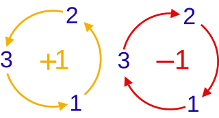
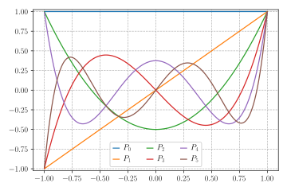
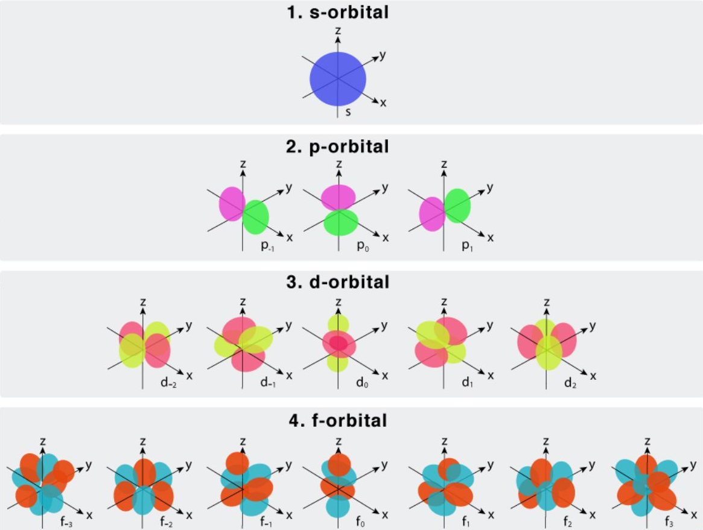
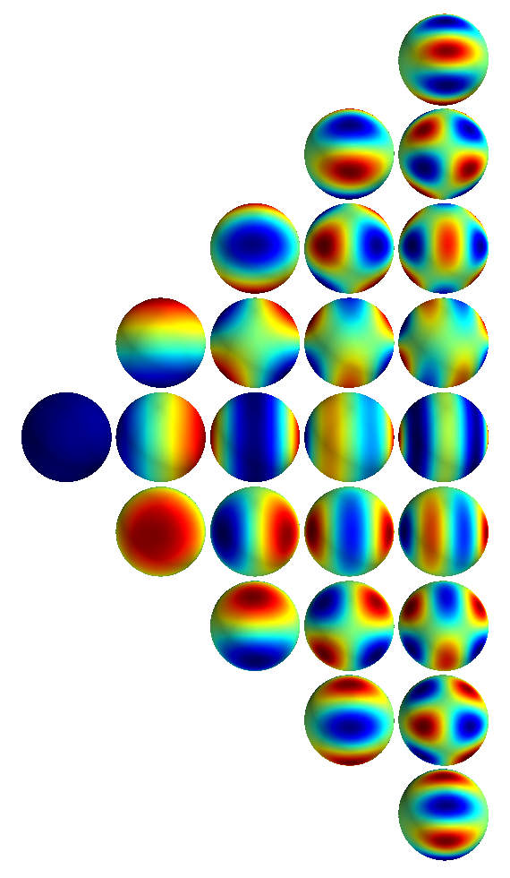
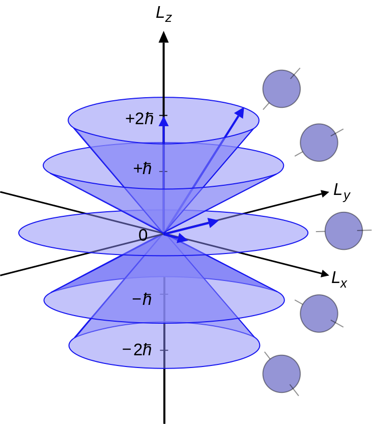
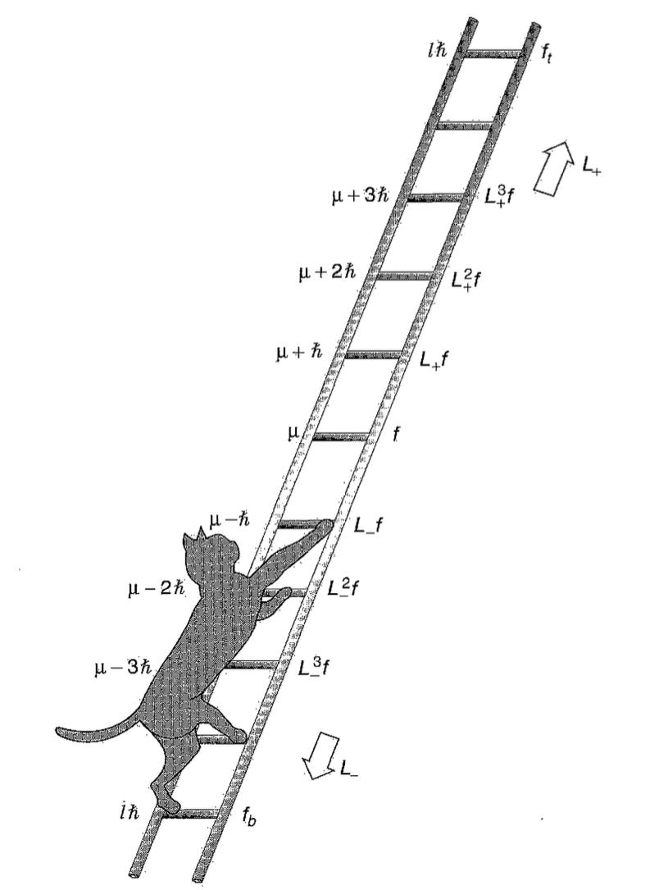
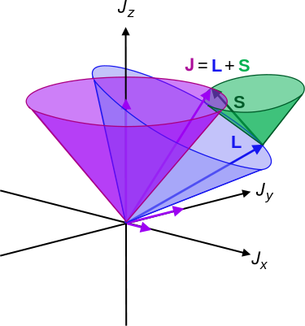

6.1 Schrödinger’s model of the atom and electron orbitals
In Chapter 1 we introduced briefly the Schrödinger’s model of the atom, which introduced the idea of electron orbitals and quantum numbers related to the those, the angular momentum and the spin. Let’s see them again.
6.1.1 Electron orbitals
Electron orbitals introduced by Schrödinger are characterised by quantum numbers. Schrödinger introduced the concept of electron orbitals and quantum numbers that describe them:
Principal Quantum Number (\(n\)): Indicates the energy level and relative size of the orbital. It can take positive integer values (1, 2, 3, …).
Angular Momentum Quantum Number (\(l\)): Defines the shape of the orbital and can take values from 0 to \(n-1\) for each value of \(n\). Each value of l corresponds to a specific type of orbital (s, p, d, f…).
Magnetic Quantum Number (\(m_l\)): Describes the orientation of the orbital in space and can take integer values from \(-l\) to \(+l\), including \(0\).
Spin Quantum Number(\(m_s\)): Specifies the electron’s spin direction, which can be either +1/2 or -1/2.
Now it’s finally time to see more formally what these quantities are and how to deal with them. We will focus on angular momentum, which is the key to describing atomic, molecular and nuclear spectra, and on spin - you will need both concepts for atomic physics next year.
6.2 Orbital angular momentum (OAM)
Angular momentum is the last major topic in this course, and the only one for which working in more than one dimension is essential. This is because angular momentum requires extra dimensions into which a rotation can take place — and for it to be interesting there has to be more than one possible rotational axis. We are, of course, blessed in having three spatial dimensions in reality, so that we can use the usual vector product and define the classical angular momentum:
\[ \mathbf{L}= \mathbf{r}\times \mathbf{p} = \begin{vmatrix} \hat{\mathbf{i}} & \hat{\mathbf{j}} & \hat{\mathbf{k}}\\ x & y & z\\ p_x & p_y & p_z \end{vmatrix}\implies \begin{cases} L_x = y p_z - z p_y\\ L_y = z p_x - x p_z\\ L_z = x p_y - y p_x \end{cases} \implies L_i = \sum_{j,k} \epsilon_{ijk} r_j p_k, \tag{6.1}\]
where \(\epsilon_{ijk}\) is the Levi-Civita tensor, which has cyclic symmetry and it is:
- \(0\) if any of its \(ijk\) indices is repeated;
- \(1\) if \(ijk\) are in the \(xyz=123\) (cyclic) order;
- \(-1\) if \(ijk\) is in the \(zyx=321\) or any other anticyclic order.
Figure 6.1 can help you remember this.

Replacing \(\mathbf{r}\to (\hat{x},\hat{y},\hat{z})\) and \(\mathbf{p}=-i\hbar\nabla\to -i\hbar(\partial_x,\partial_y,\partial_z)\), with \(\partial_i = \partial/\partial i\), the angular momentum components of Equation 6.1 an be casted in the form:
\[ \hat{L_x}=-i\hbar(y\partial_z-z\partial_y), \quad \hat{L_y}=-i\hbar(z\partial_x-x\partial_z), \quad \hat{L_z}=-i\hbar(x\partial_y-y\partial_x), \tag{6.2}\]
or, using the Levi-Civita tensor:
\[ \hat{L}_i = \sum_{jk} \epsilon_{ijk} \hat{r}_j\hat{p}_k = -i\hbar \sum_{jk} \epsilon_{ijk} r_j\partial_k. \tag{6.3}\]
The operators \(L_i\) are Hermitian, since components are all of the form \(\hat{r}_i \hat{p}_j\), with \(i \ne j\), and the canonical commutator is
\[ [\hat{r}_i, \hat{p}_j] = i\hbar\delta_{ij}. \tag{6.4}\]
6.2.1 Commutation relations for the orbital angular momentum
Using the canonical commutator of Equation 6.4, we can show the following commutation relations:
\[ [\hat{r}_i,\hat{L}_j]=i\hbar\epsilon_{ijk}\hat{r}_k,\quad [\hat{p}_i,\hat{L}_j]=i\hbar\epsilon_{ijk}\hat{p}_k, \tag{6.5}\]
where we implied a sum over \(k\), following the same structure of Equation 6.3.
However, the most important commutation relations are the following.
\[ [\hat{L}_i,\hat{L}_j]=i\hbar \epsilon_{ijk} \hat{L}_k, \tag{6.6}\]
Different components of the angular momentum are incompatible eigenstates: they can’t have simultaneously well-defined \(L_i\) projections in different directions.
The ordering sensitivity between angular momentum in any two axial directions leads to a difference that points in the third.
This means that we can’t have states that are simultaneously eigenstates of two different components of the angular momentum, e.g. \(L_x\) and \(L_y\). The components satisfy an uncertainty relation, according to the generalised uncertainty principle (Equation 3.47):
\[ \Delta L_i \Delta L_j \geq \frac{\hbar}{2}|\langle L_k \rangle |,\quad \text{with} ~i\neq j\neq k, \tag{6.7}\]
where the indices indicate the components \(x,y,z\).
The square of the angular momentum however commutes with each component: \[ [\hat{L}_i,\hat{L^2}]=0 \quad \text{for} ~\hat{L^2} = \hat{\mathbf{L}}\cdot \hat{\mathbf{L}}=\hat{L_x^2}+\hat{L_y^2} +\hat{L_z^2}. \tag{6.8}\]
The components of the angular momentum and its square, \(L_i\) and \(L^2\), are compatible: we can have simultaneous eigenstates of full and projected angular momentum.
This is the same commutativity structure as rotations in 3D. It is no accident that the algebraic structure of angular momentum in 3D and rotations in 3D should coincide - in the exact same way that the Hamiltonian/energy is the generator of time-translations, the linear momenta are generators of spatial translations, and the invariance of physics under those translations leads to conservation of energy and momentum — angular momenta are the generators of angular rotations, and are again conserved as a result in most physical systems.
6.2.1.1 Exercise
Demonstrate Equation 6.8 using the commutation properties.
6.2.2 Angular momentum in spherical polar coordinates
In this section we will derive the description of angular momentum using the wave formalism to solve SEs in 3D. The principles we use are still the same of the solutions of SEs in 1D, but we will write the components in spherical polar coordinates instead of cartesian coordinates, as they better suit the symmetry of the system.
Let’s rewrite the operators in polar coordinates:
\[ \hat{r} = r\mathbf{u}_r, \quad \nabla = \mathbf{u}_r \frac{\partial}{\partial{r}} + \mathbf{u}_\theta \frac{1}{r} \frac{\partial}{\partial{\theta}} + \mathbf{u}_\phi \frac{1}{r \sin{\theta}} \frac{\partial}{\partial{\phi}}, \tag{6.9}\]
where \(\mathbf{u}_i\) are the unit vectors.
From Equation 6.1, we can write the angular momentum in polar coordinates as:
\[ \hat{\mathbf{L}}=-i \hbar \mathbf{r} \times \mathbf{\nabla} = -i\hbar \left( %0 \mathbf{u}_r -\mathbf{u}_\theta \frac{1}{\sin\theta} \frac{\partial}{\partial\phi} + \mathbf{u}_\phi \frac{\partial}{\partial\theta} \right). \tag{6.10}\]
Note that Equation 6.10 doesn’t have radial dependence! \(L\) only depends on the angular part of the wavefunction.
6.2.3 Solution of the 3D TISE in spherical polar coordinates
We will now show that angular momentum appears naturally through quantization of the solutions of the TISE in 3D, with spherical symmetry. So let’s start wit the 3D TISE:
\[ \left[-\frac{\hbar^2}{2m}\nabla^2+V(\mathbf{r})\right]\psi(\mathbf{r}) = E \psi(\mathbf{r}). \tag{6.11}\]
Let’s replace the Laplacian in spherical coordinates (derived from Equation 6.9) and let’s assume an angle-independent potential \(V(r)\), i.e. central potential. We obtain the TISE in 3D, in polar coordinates:
\[ -\frac{\hbar^2}{2m} \left[ \frac{1}{r^2} \frac{\partial}{\partial{r}} \left( r^2 \frac{\partial\Psi}{\partial{r}} \right) + \frac{1}{r^2 \sin\theta} \frac{\partial}{\partial\theta} \left( \sin\theta \frac{\partial\Psi}{\partial\theta} \right) + \frac{1}{r^2 \sin^2\theta} \frac{\partial^2\Psi}{\partial\phi^2} \right] + V(r) \Psi = E \Psi. \tag{6.12}\]
Let’s assume that we can separate the wavefunction in a part for the radial component and one for the angular components: \(\Psi(r,\theta,\phi)=R(r)Y(\theta,\phi)\).
Replacing this in Equation 6.12, and multiplying by \(-2mr^2/\hbar^2\), we obtain
\[ \left[\frac{1}{R} \frac{\partial}{\partial{r}} \left( r^2 \frac{\partial{R}}{\partial{r}} \right)-\frac{2mr^2}{\hbar^2} \left[V(r) - E\right]\right] = \frac{-1}{Y} \left[ \frac{1}{\sin\theta} \frac{\partial}{\partial\theta} \left( \sin\theta \frac{\partial{Y}}{\partial\theta} \right) + \frac{1}{\sin^2\theta} \frac{\partial^2{Y}}{\partial\phi^2} \right] \tag{6.13}\]
We can see that the LHS of the above equation is only dependent on \(r\), while the RHS depends only on the angular coordinates, therefore the two sides have to be equal to the same constant, which we call \(\lambda\) for now.
We saw that \(\hat{L}\) depends on the angular components only, so let’s focus on the RHS of Equation 6.13 first, and rearranging it we can rewrite it in the form:
\[ \sin\theta \frac{\partial}{\partial\theta} \left( \sin\theta \frac{\partial{Y}}{\partial\theta} \right)+\frac{\partial^2{Y}}{\partial\phi^2}= - \lambda \sin^2\theta Y. \tag{6.14}\]
Again, let’s try with the separation of variables, \(Y(\theta,\phi) \equiv \Theta(\theta) \Phi(\phi)\), so the above equation returns
\[ \left[\frac{1}{\Theta} \sin\theta \frac{\partial}{\partial\theta} \left( \sin\theta \frac{\partial\Theta}{\partial\theta} \right) + \lambda \sin^2\theta\right]=-\frac{1}{\Phi} \frac{\partial^2\Phi}{\partial\phi^2}, \tag{6.15}\]
and we have the same situation seen earlier: the LHS depends only on \(\theta\) while the RHS depends on \(\phi\), so they have to be equal to the same constant! Let’s call this \(m^2\), for reasons that will get more clear later, and let’s also impose \(\lambda=\ell(\ell+1)\). Again, the reason for this will be clarified soon.
Let’s start with solving the RHS of Equation 6.15, because it’s easy:
\[ \frac{d^2\Phi}{d\phi^2}=-m^2\Phi \implies \Phi(\phi)=e^{im\phi}, \tag{6.16}\]
where \(m\) could be negative because both \(e^{im\phi}\) and \(e^{-im\phi}\) are good solutions. This is a plane wave solution, and we also observe that \(\Phi(\phi)=\Phi(\phi+2\pi)\), so this means that \(m\) must be an integer, i.e. \(m=0,\pm 1, \pm 2, ...\) is a quantum number.
If you remember, we have seen that geometric periodic boundary conditions give rise to quantization with Bohr’s atomic model, and we emphasised this again in Chapter 4, talking about periodic boundary conditions. Now we are seeing something similar here: once again, the boundary conditions give rise to the quantization.
Let’s now solve the LHS of Equation 6.15, but as anticipated, let’s now replace \(\lambda=\ell(\ell+1)\):
\[ \frac{1}{\Theta} \sin\theta \frac{\partial}{\partial\theta} \left( \sin\theta \frac{\partial\Theta}{\partial\theta} \right) + [l(l+1) \sin^2\theta-m^2]=0 \implies \Theta(\theta)=AP_l^m(\cos\theta), \tag{6.17}\]
where
\[ P_\ell^m(x) = (-1)^m (1-x^2)^{m/2} (d{}/d{x})^m P_\ell(x) \tag{6.18}\]
is the associated Legendre function (ALF), and
\[ P_\ell (x) \equiv \frac{1}{2^\ell \ell !}\left(\frac{d}{dx}\right)^\ell (x^2-1)^\ell \tag{6.19}\]
are the Legendre polynomials, which are defined for \(\ell\) integer and positive, i.e. \(\ell = 0,1,2,...\) is the orbital angular momentum quantum number. The first six Legendre polynomials are shown in Figure 6.2.

ALFs (Equation 6.18) are not polynomials, but \(m\) th derivatives of the Legendre functions, so in order to be non-zero, the condition \(|m|<\ell\) must be satisfied, so \(m=-\ell,...,\ell\) has \(2\ell +1\) possible values.
The spherical harmonics are shown in Figure 6.3 and Figure 6.4; \(\ell\) determines the polynomial order, while \(m\) effectively controls the orientation.


6.2.4 Action of parity, \(L\) and \(L^2\) on spherical harmonics
Let’s see what’s the action of some operators on the spherical harmonics.
Parity
Under parity transform \(\theta \to \pi - \theta, \quad \phi \to \phi + \pi\):
\[ e^{i m \phi} \to e^{i m \pi} e^{i m \phi} = (-1)^m e^{i m \phi} \] \[ P_\ell^m(\cos\theta) \to P_\ell^m(\cos(\theta+\pi)) = (-1)^{\ell-m} P_\ell^m(\cos\theta) \]
From these, we can find that the total parity is:
\[ \hat{P}Y_\ell^m = (-1)^\ell Y_\ell^m. \tag{6.22}\]
z-projection of angular momentum
Under \(L_z\):
\[ \hat{L_z} = -i \hbar \frac{\partial}{\partial\phi} \implies \hat{L_z} Y_\ell^m = m \hbar Y_\ell^m \tag{6.23}\]
Squared angular momentum
The squared angular momentum is
\[ \hat{L^2} = -\hbar^2 \left[ \frac{1}{\sin\theta} \frac{\partial}{\partial\theta} \left( \sin\theta \frac{\partial}{\partial\theta} \right) + \frac{1}{\sin^2\theta} \frac{\partial^2}{\partial\phi^2} \right], \tag{6.24}\]
therefore \[ \hat{L^2} Y_\ell^m = \ell (\ell+1) \hbar^2 Y_\ell^m \qquad [\hat{L^2}, \hat{H}] = 0. \tag{6.25}\]
It is important to note that the above are all eigenvalue equations, with Equation 6.23 and Equation 6.25 being particularly important! The eigenvalues are discretised: \(\ell\) and \(m\) are quantum numbers, and the fact that \(L_z^{\text{max}}=\ell\hbar\) is less than \(L^\text{max}=\sqrt{\ell(\ell+1)}\hbar\) is related to the uncertainty principle.
Both the total orbital angular momentum and its projection along \(z\) (conventionally we selected this direction) are quantised, as shown in Figure 6.5. For a given \(L_z\) eigenstate (blue cone in Figure 6.5), the \(L_{x,y}\) values live somewhere indeterminate on the rim of the cone. The radius of the sphere, \(\sqrt{l(l + 1)}\hbar\) is the total angular momentum and cannot be obtained by the top/bottom projection cones. Note there is nothing magic about the \(z\)-axis: quantization of angular momentum applies to whatever axis - \(x, y, z,\) or anywhere in-between - but different projection axes are incompatible.

Here is a link to a nice description of spherical harmonics via the Cosmic Microwave Background power spectrum.
6.2.5 Orbital angular momentum and spherical harmonics in Dirac notation
So far we focused on \(L_z\) and \(L^2\), but what if we want to determine \(L_x\) and \(L_y\)?
It is very convenient at this point to swap to the Dirac notation by defining a ket state with the two quantum numbers \(\ell,m\).
6.2.6 Angular momentum ladder operators
Just like with QHO energy eigenstates, we can define ladder operators to move between (\(z\)) angular momentum eigenstates: these are the angular momentum ladder operators \(\hat{L_\pm}\), defined as follows.

Ladder operators can be very helpful: they allow expressions of \(\hat{L_x}, \hat{L_y}, \hat{L_x^2}\) etc. in terms of \(\hat{L_z}\) and \(\hat{L^2}\) (cf. \(\ell\) and \(m\) eigenstates from Equation 6.26 and Equation 6.27).
But we started this by talking about the z axis and how to measure e.g. \(L_x\) — what relevance do operators for changing the \(z\)-projection eigenstates have to measuring/extracting the \(x\) and \(y\) ones? Simply that we can “invert” the ladder operator definitions to give algebraic (rather than differential (!), thanks to Dirac) expressions for \(L_{x,y}\):
We can rearrange Equation 6.28 to obtain:
\[ \hat{L_x}=(\hat{L}_++\hat{L}_-)/2, \quad \hat{L_y}=(\hat{L}_+-\hat{L}_-)/2i, \tag{6.31}\]
From this we can derive the commutation relations
\[ [\hat{L_z},\hat{L_\pm}]=\pm\hbar\hat{L_\pm}, \quad [\hat{L}_+,\hat{L}_-]=2\hbar \hat{L_z}. \tag{6.32}\]
From Equation 6.31 it is easy to see that:
- spherical harmonics are not eigenstates of \(L_x\) or \(L_y\), as they are composed of single ladder operators which change the state away from the original \(Y_\ell^m\);
- their expectation values must be zero, as the change of ket state forces the overlap integrals to zero.
This latter result also makes physical sense: if we are in a definite-\(L_z\) state, the orientation of the \(x-\) and \(y\)-axes around \(\hat{\mathbf{z}}\) is arbitrary and can’t pick out one direction as more special than the other: as the projected values can be both positive and negative, with \(0\) in the middle, by symmetry \(\langle L_x\rangle = \langle L_y\rangle = 0\).
This weaponisation of ladder operators and orthogonality to calculate differentially awkward properties can be extended to e.g. the algebraic form of the \(\hat{L_x^2} \equiv \hat{L_x}\hat{L_x}\) operator in terms of the trivially evaluated operators \(\hat{L_z}, \hat{L_z^2}, \hat{L^2}\) and \(\hat{L_\pm}\), for which the spherical harmonics are either eigenstates or the targets of Equation 6.29:
\[ \hat{L^2}=\hat{L_x^2}+\hat{L_y^2}+\hat{L_z^2} \implies \hat{L_x^2} = \hat{L^2}-\hat{L_z^2}-\hat{L_y^2}, \]
and using Equation 6.31, this gives
\[ \begin{aligned} \hat{L_x^2} &= \hat{L^2}-\hat{L_z^2}-\frac{1}{(2i)^2}(\hat{L_+}-\hat{L_-})^2\\ &=\hat{L^2}-\hat{L_z^2}+\frac{1}{4}(\hat{L_+}\hat{L_+}+\hat{L_-}\hat{L_-}+\hat{L_-}\hat{L_+}+\hat{L_+}\hat{L_-}). \end{aligned} \tag{6.33}\]
The evaluation of this is essentially “reading off” the \(Y_\ell^m\) eigenvalues, with just a little care about the \(Y_\ell^m \to Y_\ell^{m\pm 1}\) state change between the first and second ladder operations in the terms \(\hat{L_-}\hat{L_+}\) and \(\hat{L_+}\hat{L_-}\). The \(\hat{L_+}\hat{L_+}\) and \(\hat{L_-}\hat{L_-}\) terms contribute nothing to the expectation value as their overlap-integral terms will be \(\langle\ell,m|\ell,m\pm 2\rangle=0\), but they do ensure that \(\hat{L_z^2}\) does not share eigenbasis with \(\hat{L_z}, \hat{L_z^2},\hat{L^2}\) - nor with \(\hat{L_y}\) etc., for that matter.
6.2.7 Computing angular momentum observables
In Chapter 4, with 1D wavefunctions, we saw that a measurement with an operator \(\hat{O}\) randomly collapses the wavefunction into eigenfunctions of \(\hat{O}\). Expectation values \(\langle{\hat{O}}\rangle\) are the mean eigenvalues, averaged over wavefunction collapses.
Like in 1D, this averaging, this averaging is still directly obtained from an integral over spatial configurations — but now we are in 3D, hence need an angular integral over solid angle \(d\Omega(\theta, \phi)\):
\[ \langle{\hat{O}}\rangle = \langle \psi | \hat{O}| \psi \rangle = \int d\Omega \psi^* \hat{O} \psi = \int_0^{2\pi} d\phi \int_0^\pi d\theta \sin\theta \psi(\theta,\phi)^* \hat{O} \psi(\theta,\phi). \tag{6.34}\]
6.2.7.1 Some tips
- Given a general angular wavefunction, first see if you can spot its decomposition into spherical harmonic terms:
- the \(c_i\) coefficients and \(m, \ell\) values are then easily read off
- expectation calculations simplify to \(\langle \hat{O}\rangle = \sum_i |c_i|^2 \lambda_i\) for eigenvalues \(\lambda_i\)
- Try to decompose general operators into ladder operators, and hence \(\hat{L_z}\) and \(\hat{L^2}=\hat{L_x^2}+\hat{L_y^2}+\hat{L_z^2}\).
- These are much easier to work with, because the spherical harmonics are eigenfunctions of these operators.
- The rewriting is done by expanding e.g. \(\hat{L}_{x,y}\) in terms of “backward” linear combinations of \(\hat{L_\pm}\), and looking for opportunities to substitute standard commutators (which generate new \(\hat{L}_i\) operators), on new axes.
- Practice! The maths is not so bad, with a bit of practice.
6.2.7.2 Exercise
Evaluate \(\langle L_x^2\rangle\) in terms of ladder operators, and \(\langle L_z\rangle\) and \(\langle L^2\rangle\) using the differential operators on spherical harmonics and combinations, e.g. \(\psi = \sqrt{5/4π} \cos^2\theta\).
6.3 Spin: intrinsic angular momentum
Besides the orbital angular momentum, which can be (roughly) related to the rotational motion of the electron in its orbit, there is another intrinsic angular momentum: the spin \(S\), which can’t be explained in classical terms, it is an irreducible property of the electron.
The spin operator \(\hat{S}\), its components and its square have the exact same properties and commutator algebra of the orbital angular momentum:
\[ [\hat{S}_i,\hat{S}_j]=i\hbar \epsilon_{ijk}\hat{S}_k,\quad [\hat{S}_i,\hat{S}^2]=0. \tag{6.35}\]
In analogy with the angular momentum states \(|\ell,m\rangle\), the spin states are described by the spin quantum number \(s\) and the spin magnetic quantum number \(m_s\), i.e. \(|s,m_s\rangle\). To avoid confusion with the quantum number \(m\) introduced for the orbital angular momentum, we will call this \(m_\ell\) in the following, i.e. \(|\ell,m\rangle \to |\ell,m_\ell\rangle\).
The physical processes underlying orbital and intrinsic angular momentum are entirely separate, therefore any of the components of one commutes with the components of the other, i.e.
\[ [\hat{S_i},\hat{L_j}]=0. \tag{6.36}\]
There is one important difference between the spin eigenstates and the OAM ones: the spin eigenstates are not spherical harmonics, i.e. they are not functions of \(\theta\) and \(\phi\), and there is no a priori reason to exclude half-integer values of \(s\) (and therefore of \(m_s\)). In fact:
\[ s=0,\frac{1}{2},1,\frac{3}{2},...; \quad m_s = -s, -s +1, ..., s-1, s. \]
Every elementary particle has a specific value of spin, \(s\). Here are some examples:
- pi mesons: \(s=0\);
- electrons: \(s=1/2\);
- photons: \(s=1\);
- delta baryons: \(s=3/2\).
6.4 Total angular momentum
We can define the total angular momentum, \(\hat{\mathbf{J}}\) (see Figure 6.7), as the sum of the orbital and spin angular momenta:
\[ \hat{\mathbf{J}}=\hat{\mathbf{L}}+\hat{\mathbf{S}}, \tag{6.41}\]
with resulting total angular momentum quantum number \[ j=|\ell-s|,...,\ell+s, \]
i.e. \(j\) takes all the integer values allowed between completely antiparallel and completely aligned sources of angular momentum. Each \(j\) then has the usual set of \(2j + 1\) quantized projection states, \(m_j=m_\ell+m_s \in \{−j, . . . , j\}\).

The components of the total angular momentum satisfy the commutation relation
\[ [\hat{J_i},\hat{J_j}]=i\hbar\epsilon_{ijk}\hat{J_k}. \tag{6.42}\]
Since \([L,S]=0\), \(\hat{L^2}\) and \(\hat{S^2}\) are both compatible with \(\hat{J^2}\):
\[ \hat{J^2}=(\hat{\mathbf{L}}+\hat{\mathbf{S}})^2=\hat{L^2}+\hat{S^2}+2\hat{\mathbf{L}}\cdot\hat{\mathbf{S}}, \]
therefore
\[ [\hat{J^2},\hat{L^2}]=[\hat{J^2},\hat{S^2}]=0. \]
However, \(\hat{L_i}\) and \(\hat{S_i}\) are incompatible with \(\hat{J^2}\):
\[ [\hat{J^2},\hat{L_z}]=2[\hat{L_x},\hat{L_z}]\hat{S_x}+2[\hat{L_y},\hat{L_y},\hat{L_z}]\hat{S_y}\neq 0. \]
The eigenvalue equation for the total angular momentum is
\[ \hat{J^2}|j\rangle = j(j+1)\hbar^2|j\rangle, \tag{6.43}\]
where \(|j\rangle\) is the state having \(|j=\ell+s\rangle\).
This topic can get much broader, and we could be talking about how to measure the spin and angular momentum, but this is something that you will see in the next year’s courses, especially in Atomic Physics, so this seems like a good stopping point.
6.5 Summary
- Angular momentum requires 3D wavefunction treatment. Wavefunction in a central potential is separable into \(r, \theta\), and \(\phi\) dependences: angular part given by orthogonal spherical harmonics.
- \(\hat{L^2}\) quantum number is \(\ell(\ell + 1)\); \(\hat{L_z}\) quantum number is \(m_\ell\).
- Commutation relations: can’t simultaneously measure \(L_{x,y,z}\), but can measure one projection plus \(L^2\). Projection always smaller than full to preserve uncertainty.
- Ladder operators also exist for angular momentum: raise and lower \(m_\ell\) for fixed \(\ell\). Can use with orthogonality in expectation value calculations
- The spin \(S\) is an intrinsic angular momentum independent of \(L\), but obeying the same commutation relations and properties, except for the fact that its quantum number \(s\) can be half-integer.
- Combine \(L\) and \(S\) into total momentum \(J\).